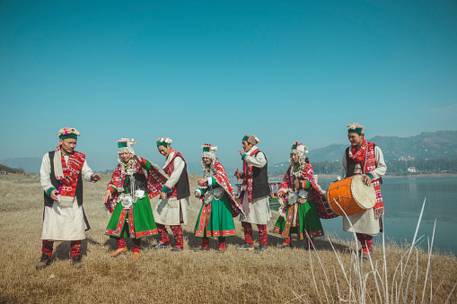
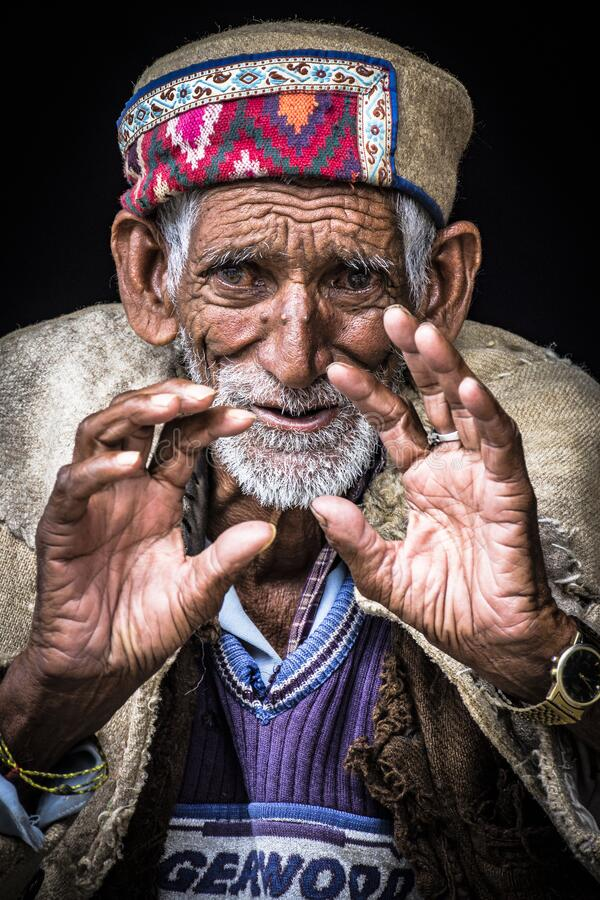
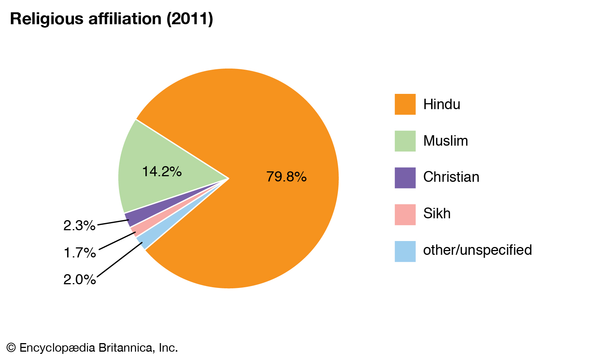

About Himachal
The state of Himalays
Himachal Pradesh "Province of the Snow-laden Mountains"is a state in the northern part of India. Situated in the Western Himalayas, it is one of the eleven mountain states and is characterized by an extreme landscape featuring several peaks and extensive river systems. Himachal Pradesh is the northernmost state of India and shares borders with the union territories of Jammu and Kashmir and Ladakh to the north, and the states of Punjab to the west, Haryana to the southwest, Uttarakhand to the southeast and a very narrow border with Uttar Pradesh to the South. The state also shares an international border to the east with the Tibet Autonomous Region in China. Himachal Pradesh is also known as 'Dev Bhoomi' or 'Land of God' and 'Veer Bhoomi' which means 'Land of Braves'.
Climate of Himachal Pradesh
1. There is a huge variation in the climatic conditions of Himachal Pradesh due to variation in altitude (450–6500 metres). The climate varies from hot and sub-humid tropical (450–900 metres) in the southern low tracts, warm and temperate (900–1800 metres), cool and temperate (1900–2400 metres) and cold glacial and alpine (2400–4800 metres) in the northern and eastern high elevated mountain ranges.
2. By October, nights and mornings are very cold. Snowfall at elevations of nearly 3000 m is about 3 m and lasts from December start to March end. About 4500 m, is perpetual snow.
3. The spring season starts from mid February to mid April. The weather is pleasant and comfortable in the season.
4. The rainy season start at the end of the month of June. The landscape lushes green and fresh. During the season streams and natural springs are replenished. The heavy rains in July and August cause erosion, floods and landslides. Of all the state districts, Dharamsala receives the highest rainfall, nearly about 130 mm. Spiti is the driest area of the state (rainfall below 50mm). The reason is that it is enclosed by high mountains on all sides.

| Altitude |
Up to 800m |
800m-1,600m |
1,600m-2,700m |
2,700-3,600, |
| Type of Area |
Valley areas and foothils |
Hilly and mountain ranges |
Alpine zone |
Lahaul Spiti and Kinnaur range |
| Climatic conditions |
Sub tropical |
Slightly warm temperature |
Cool temperature with humidity |
Dry and extremely cold conditions
|
| Rainfall in mm. |
1,500 |
1,500-3000 |
1,000-1,500 |
500
|
| % of total geographical area |
30% |
10% |
25% |
35% |
| % of total cultivated area |
55% |
30%/td>
| 10% |
5% |
Tourism

1. Tourism in Himachal Pradesh is a major contributor to the state's economy and growth. The Himalayas attracts tourists from all over the world. Hill stations like Shimla, Manali, Dharamshala, Dalhousie, Chamba, Khajjiar, Kullu and Kasauli are popular destinations for both domestic and foreign tourists.
2.The state also has many important Hindu pilgrimage sites with prominent temples like Shri Chamunda Devi Mandir, Naina Devi Temple, Bajreshwari Mata Temple, Jwala Ji Temple, Chintpurni, Baijnath Temple, Bhimakali Temple, Bijli Mahadev and Jakhoo Temple. Manimahesh Lake situated in the Bharmour region of Chamba district is the venue of an annual Hindu pilgrimage trek held in the month of August which attracts lakhs of devotees.
3. The state is also referred to as "Dev Bhoomi" (literally meaning Abode of Gods) due to its mention as such in ancient Hindu texts and occurrence of a large number of historical temples in the state.
Population
1.Himachal Pradesh has a total population of 6,864,602 including 3,481,873 males and 3,382,729 females according to the Census of India 2011.
2. It has only 0.57 per cent of India's total population, recording a growth of 12.81 per cent.
3. The scheduled castes and scheduled tribes account for 25.19 per cent and 5.71 per cent of the population, respectively.
4. The sex ratio stood at 972 females per 1,000 males, recording a marginal increase from 968 in 2001.
5. The child sex ratio increased from 896 in 2001 to 909 in 2011. The total fertility rate (TFR) per woman in 2015 stood at 1.7, one of the lowest in India.

Religion

1.Hinduism is the major religion in Himachal Pradesh. More than 95% of the total population adheres to the Hindu faith and majorly follows Shaivism and Shaktism traditions.The distribution of which is evenly spread throughout the state.
2.Himachal Pradesh has the highest proportion of Hindu population among all the states and union territories in India.
3.Other religions that form a small percentage are Islam, Sikhism and Buddhism.
4. Muslims are mainly concentrated in Sirmaur, Chamba, Una and Solan districts where they form 2.53-6.27% of the population.
5. Sikhs mostly live in towns and cities and constitute 1.16% of the state population.
6. The Buddhists, who constitute 1.15%, are mainly natives and tribals from Lahaul and Spiti, where they form a majority of 62%, and Kinnaur, where they form 21.5%.